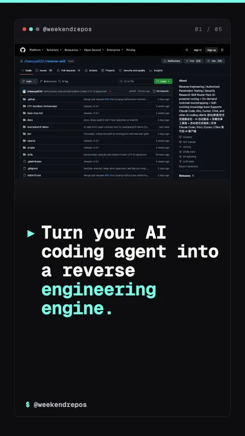

reverse-skill
Automated binary reverse engineering for AI coding agents

Turn your AI coding agent into a reverse engineering engine.
Automates Ghidra, radare2, and binary decompilation workflows.
Reverse Skill connects AI coding agents directly to binary analysis toolchains, decompiling stripped executables and reconstructing function signatures automatically.
automated toolchain bootstrapping · radare2 · ghidra
AI agents trace memory layouts and stack corruption vectors.
The agent analyzes control-flow graphs, identifying unsafe pointer arithmetic, use-after-free conditions, and unvalidated input buffers.
control-flow graph analysis · memory safety triage
Generates proof-of-concept tests and patch proposals.
Once a vulnerability is identified, the agent crafts a minimal reproduction test and writes a clean source-level patch to fix the bug.
automated PoC generation · defensive security patching
Open-source on GitHub for security researchers.
Reverse Skill is completely open-source, compatible with Claude Code, Cursor, and custom agent harnesses.
github.com/zhaoxuya520/reverse-skill · MIT License